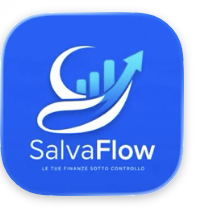

Applicazioni iOS sviluppate con passione per offrire strumenti semplici, affidabili e professionali.

Gestione completa delle spese, entrate, statistiche, categorie personalizzate, backup e sincronizzazione.
Scarica su App StoreGestione professionale delle partite di Ramino con storico, statistiche, esportazione dati, backup e punteggi personalizzati.
Scarica su App StoreSalvatore Caccavo Apps è un progetto indipendente dedicato alla creazione di applicazioni iOS intuitive, moderne e orientate alla produttività personale e al tempo libero.
Le applicazioni non raccolgono dati personali sensibili, non vendono informazioni a terzi e utilizzano esclusivamente i servizi necessari al corretto funzionamento delle app.